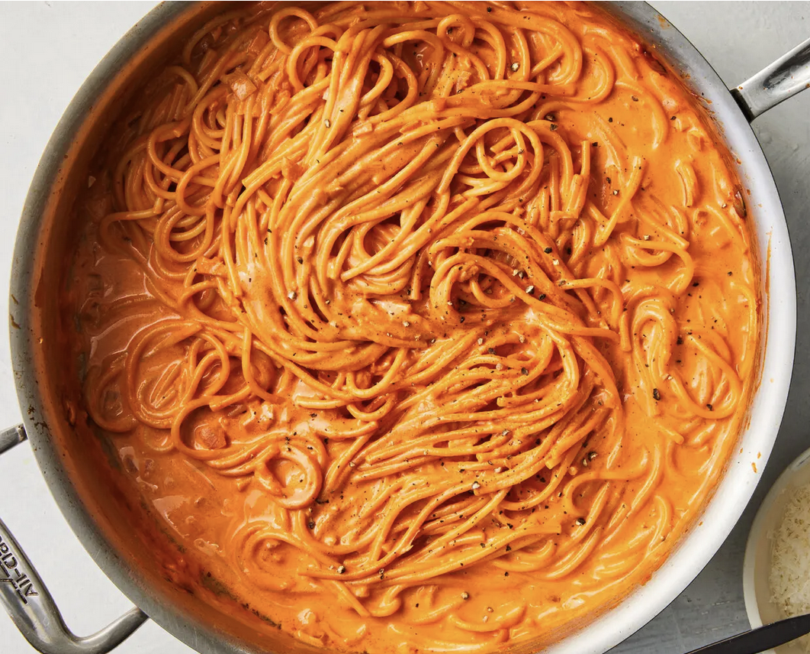

Creamy Tomato Spaghetti with Preserved Lemon

Something magical happens when preserved lemon and tomato are cooked together. In this quick and simple pasta,
fragrant lemon permeates the tomato paste, creating a beautifully aromatic (and pantry-friendly) sauce with the
addition of heavy cream. Spaghetti is tossed with the sauce, which ends up subtly sweet and yet bright and tangy
— a comforting weeknight twist on the always beloved tomato pasta.
Ingredients
- Fine sea salt and black pepper
- 3tablespoons olive oil
- ½medium yellow onion, finely chopped
- 2garlic cloves, minced or crushed in a garlic press
- 5tablespoons tomato paste
- ½preserved lemon, seeded and minced (about 2 tablespoons), plus more to taste
- 2teaspoons honey, plus more to taste
- 1cup heavy cream
- 1pound spaghetti (or other long pasta)
- Finely grated Parmesan (optional), for garnish
Instructions
- Place a large pot of water over high heat, add 1 teaspoon salt and bring to a boil.
- Meanwhile, heat oil in a large pan or pot over medium-low. Add the onion, garlic, tomato paste, 1 tablespoon
of the minced preserved lemon, the honey, ½ teaspoon salt and ¼ teaspoon pepper, and cook, stirring
frequently, until fragrant and the onion starts to soften, about 5 minutes.
- Mix in the cream, taste the sauce and adjust the seasoning with more preserved lemon, honey and salt as
necessary. Bring to a gentle simmer, then turn off the heat and cover with a lid to keep the sauce warm.
- Cook the spaghetti in the boiling water until almost al dente according to the package instructions, 6 to 7
minutes. Reserve 1 cup of the cooking water, then drain pasta.
- Over medium-low heat, add the spaghetti to the sauce along with ½ cup of the reserved cooking water, and
toss to coat. Continue to toss until the spaghetti is al dente, adding more cooking water as needed to
achieve a glossy sauce that clings to the pasta, 3 to 4 minutes.
- Serve warm, topped with Parmesan if desired.
Home